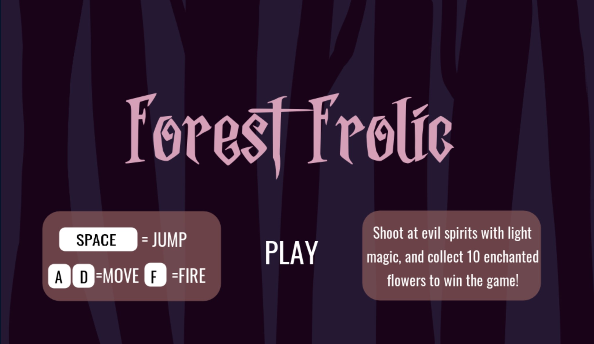
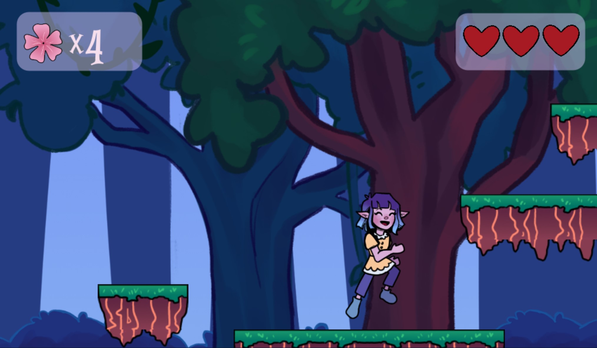

×

Forest Frolic
A Platformer Prototype
Process

This project was created using the Godot game engine and its native scripting language, GDScript. I followed BornCG’s tutorial for most of this project since it was my first time programming in Godot. First, I designed a tile set, parallax background, an enemy, and a collectable flower object in Clip Studio Paint. I also drew a walk cycle for the main character. Next, I animated these elements and attached coding scripts to the character, enemy and flower. Following this, I added a life system to the game, allowing the player to get hit several times before they must start over. Lastly, I added a shooting mechanic which allows the player to attack the enemy using magic. As a finishing touch, I used BeepBox.io to compose the main menu music, in-game soundtrack, and sound effects. After polishing the code and making sure the game ran smoothly, I uploaded the project to itch.io and made it playable directly in-browser.
Intentions
The intention of this project was to allow the player to escape into a fantastical environment and be diverted from their day-to-day life briefly while they play as Clara the elf and help her collect all the magic flowers while ridding the forest of dangerous evil spirits. This game is a prototype; if I were to fully develop it, I would add more varied levels and an overarching storyline to increase the interactivity and connection with the player.

Credits